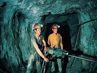
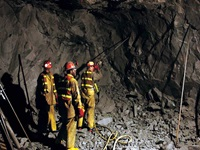
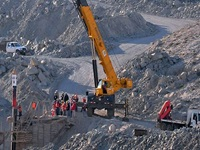
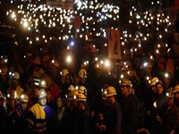

Información sobre la Minería
|
La minería es la extracción selectiva de los minerales y otros materiales de la corteza terrestre de los cuales se puede obtener un beneficio económico, así como la actividad económica primaria relacionada con ella. Dependiendo del tipo de material a extraer la minería se divide en metálica, no metálica y piedras ornamentales y de construcción. Existen más de 7000 minas en producción y se construyen más cada año. La minería ha tenido un significativo impacto en el desarrollo de muchos países (incluso algunos que hoy en día no tienen industria minera). |
 |
|  |
Los métodos de explotación pueden ser a cielo abierto o subterráneo. Los factores que lo determinarán serán entre otros la geología y geometría del yacimiento y la característica geomecánica del mineral y el estéril, también influyen factores económicos que rigen la industria minera actual. |
|
El proceso de minería involucra diferentes etapas las cuales son llevadas a cabo para desarrollar un proyecto minero, dentro de estas etapas se encuentran; la búsqueda y estimación de recursos, proyecto (prefactibilidad, factibilidad, ingeniería de detalles), obras, desarrollo minero ó explotación (arranque y manejo de materiales), procesamiento y comercialización. |
 |
|  |
La mina más antigua que se tiene constancia arqueológica es "Cueva del León", en Suazilandia. En este lugar, que de acuerdo con las dataciones por el método del carbono 14 tiene una edad de 43.000 años, los hombres del paleolítico excavaban buscando hematites, un mineral que contiene hierro, con el que probablemente producían pigmentos de color ocre. |
Peores consecuencias que la sangre y el fuego de la guerra tuvo la implantación de una economia minera.
Las minas exigian grandes desplazamientos de poblaciin y desarticulaban las unidades agricolas comunitarias;
no solo extinguian vidas innumerables a traves del trabajo forzado, sino que ademas, indirectamente, abatan
el sistema colectivo de cultivos.
"Las venas abiertas de America Latina" (1971),
Eduardo Galeano